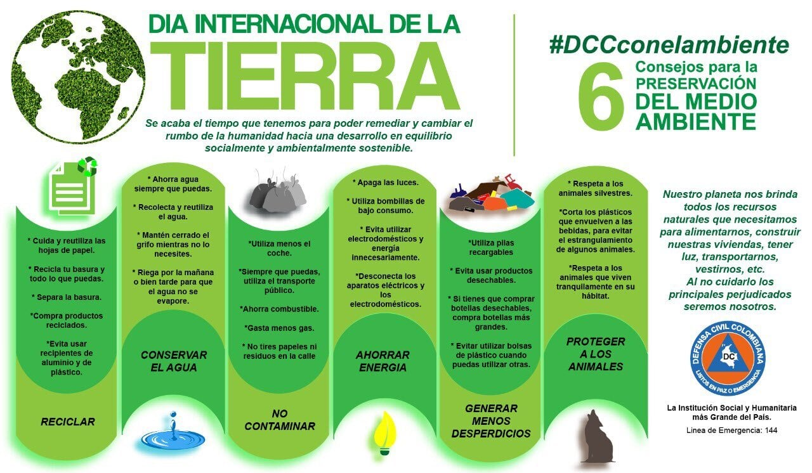
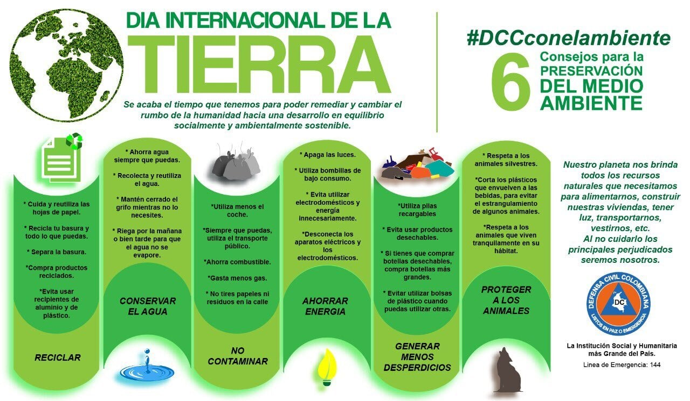

Acerca de Nosotros
La fundacion futuro se encarga de informar a las personas aserca del medio ambiente.
Y sobre los daños que causamos a la naturaleza y como poder ayudarla.
El medio ambiente se refiere a la integración de todos los seres vivos y no vivos y a la interacción que naturalmente tienen entre ellos.


Carteles del cuidado del medio ambiente
 

Informacion

¿Qué es el Medio Ambiente?
Los seres vivos, el suelo, el agua, el aire, los objetos físicos fabricados por el hombre y los elementos simbólicos (como las tradiciones, por ejemplo) componen el medio ambiente. La conservación de éste es imprescindible para la vida sostenible de las generaciones actuales y de las venideras. Podría decirse que el medio ambiente incluye factores físicos (como el clima y la geología), biológicos (la población humana, la flora, la fauna, el agua) y socioeconómicos (la actividad laboral, la urbanización, los conflictos sociales).

¿Qué es la contaminación ambiental?
Se denomina contaminación ambiental a la presencia de componentes nocivos (ya sean químicos, físicos o biológicos) en el medio ambiente (entorno natural y artificial), que supongan un perjuicio para los seres vivos que lo habitan, incluyendo a los seres humanos. La contaminación ambiental está originada principalmente por causas derivadas de la actividad humana, como la emisión a la atmósfera de gases de efecto invernadero o la explotación desmedida de los recursos naturales.
Voluntariado juvenil impulsa la cultura de ayudar
La contaminación ambiental, la deforestación de los bosques y la carencia de alimentos, entre otros, son problemáticas que aquejan al mundo actual. Las noticias que invaden los medios de comunicación día a día son poco alentadoras y muestran panoramas catastróficos que piden a gritos la acción inmediata de cambio. Dentro de este constante devenir de males planetarios, existen personas que se convierten en una lumbre de esperanza ante diferentes situaciones. Una de las formas más importantes de contribuir al crecimiento y a la mejora del medio ambiente es a través del voluntariado. Esta práctica consiste en el trabajo de personas que sirven a una comunidad o a la naturaleza por decisión propia y libre, sin recibir ninguna recompensa mone- taria. Con el tiempo ha ido ganando terreno de forma rápida sobre todo en jóvenes que asumen su papel de actores clave dentro del desarrollo de la sociedad.
Un mapa para identificar los puntos de reciclaje
Muchos de nosotros no sabemos dónde llevar nuestros residuos. Tener un mapa con todos los datos y contactos nos orienta y conduce a los lugares adecuados para depositar ahí nuestra basura clasificada. Eso es lo que hicimos: facilitarle al ciudadano esta búsqueda de lugares a través de un mapa”, explica Wendy Claros, una de las creadoras del único mapa de puntos de reciclaje que hay en la ciudad de Santa Cruz. Wendy y Yukio son dos ingenieros ambientales y voluntarios de la Fundación Gaia Pacha - Santa Cruz, que en 2017 decidieron mapear la ciudad de Santa Cruz para identificar los principales puntos de reciclaje. El mapa fue creado en base a la herramienta gratuita y abierta de Google Maps, que permite personalizar y marcar por colores los puntos estratégicos, dependiendo la finalidad del usuario.
María, la futura ingeniera que ideó un filtro de agua a partir de cáscara de quinua
La contaminación ambiental, la deforestación de los bosques y la carencia de alimentos, entre otros, son problemáticas que aquejan al mundo actual. Las noticias que invaden los medios de comunicación día a día son poco alentadoras y muestran panoramas catastróficos que piden a gritos la acción inmediata de cambio. Dentro de este constante devenir de males planetarios, existen personas que se convierten en una lumbre de esperanza ante diferentes situaciones. Una de las formas más importantes de contribuir al crecimiento y a la mejora del medio ambiente es a través del voluntariado. Esta práctica consiste en el trabajo de personas que sirven a una comunidad o a la naturaleza por decisión propia y libre, sin recibir ninguna recompensa mone- taria. Con el tiempo ha ido ganando terreno de forma rápida sobre todo en jóvenes que asumen su papel de actores clave dentro del desarrollo de la sociedad.
Quedarse en casa: un buen momento para empezar a reciclar
“A veces le pedimos a la vida un poco de tiempo para terminar un proyecto, ordenar los pendientes, o para tomar un curso. Ahora, por la cuarentena, nos enfrentamos a una pausa obligada que, entre otras cosas, puede servirnos para reflexionar sobre nuestra actitud en relación al planeta”, señala al otro lado del teléfono Gabriela Cremmer, coordinadora para Bolivia de Start, una agrupación internacional de voluntarios preocupados y ocupados por los temas medioambientales. Y agrega un desafío: “Proponemos empezar por una acción que podemos asumir de forma consciente y desde nuestras casas: reciclar”.